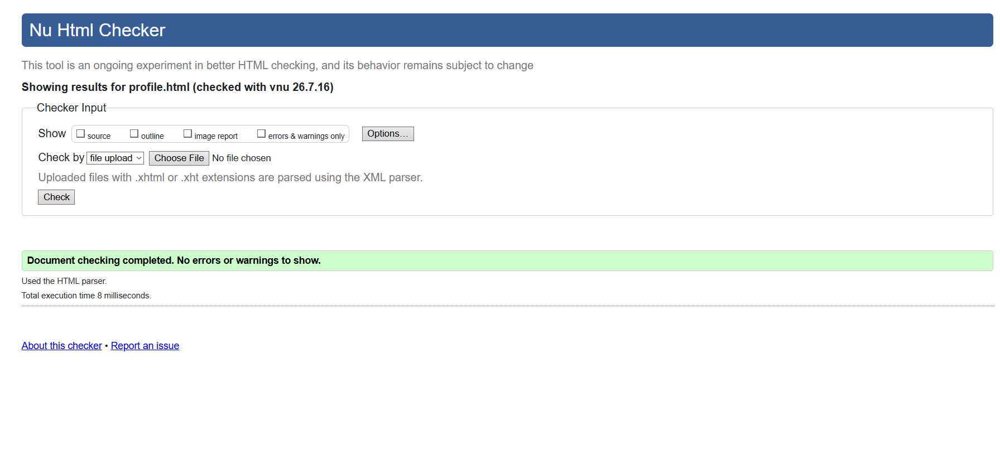
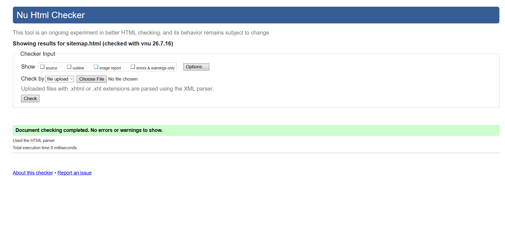
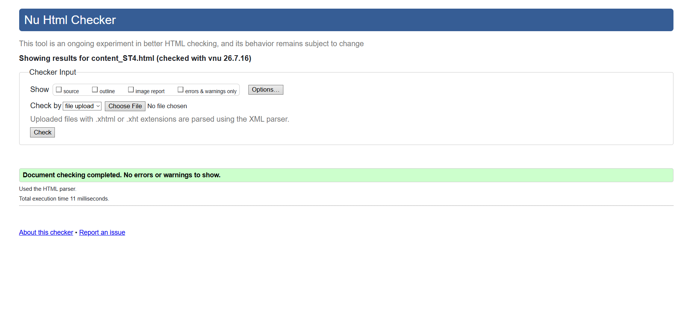

Profile validation report
The User Profile page was checked using the W3C Nu HTML Checker. The validation confirmed that the page contains no HTML errors. Minor warnings related to document structure were reviewed and resolved where appropriate. Semantic HTML, form labels, alt text, and heading hierarchy were used to improve accessibility and maintain compliance with web standards.

Back to Page Editor page
Sitemap validation report
The Sitemap page was validated using the W3C Nu HTML Checker. The page passed validation after correcting the heading hierarchy and ensuring the SVG structure followed HTML standards. The final version contains no HTML errors and provides accessible navigation through meaningful labels and semantic markup.

Back to Page Editor page
Content Page validation report
The Content Page was validated using the W3C Nu HTML Checker. The page contains valid HTML, and any warnings related to section headings were reviewed and addressed. Semantic elements, descriptive image alt text, and a logical heading structure were used to improve accessibility and overall code quality.
